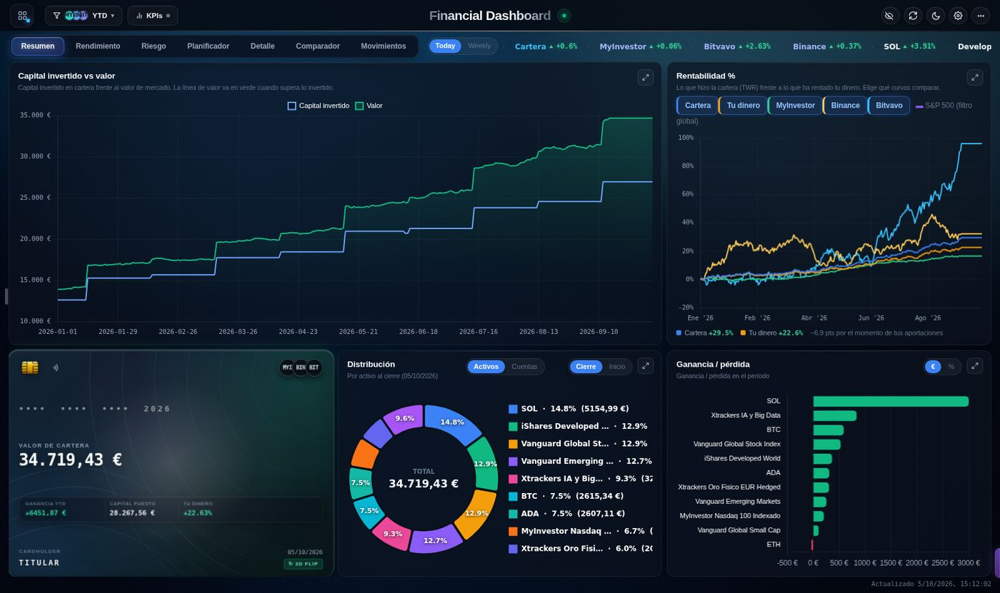
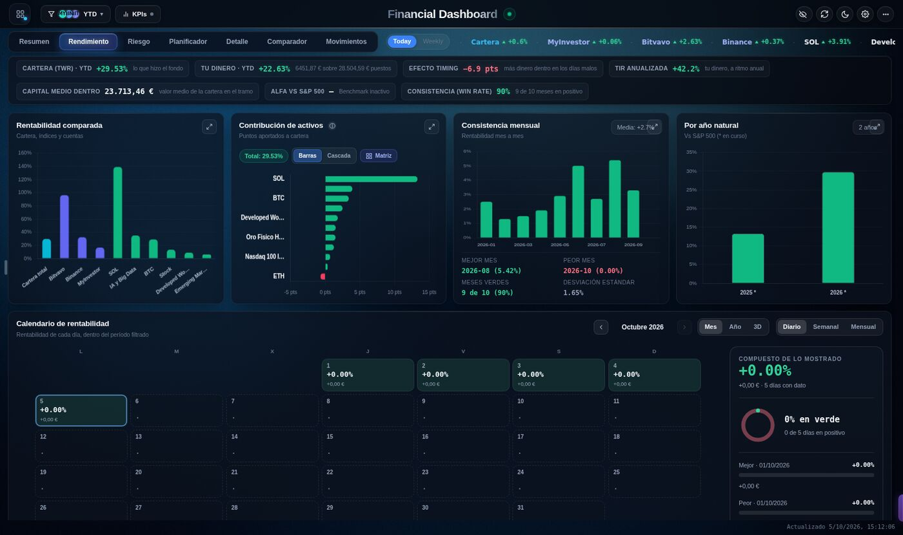
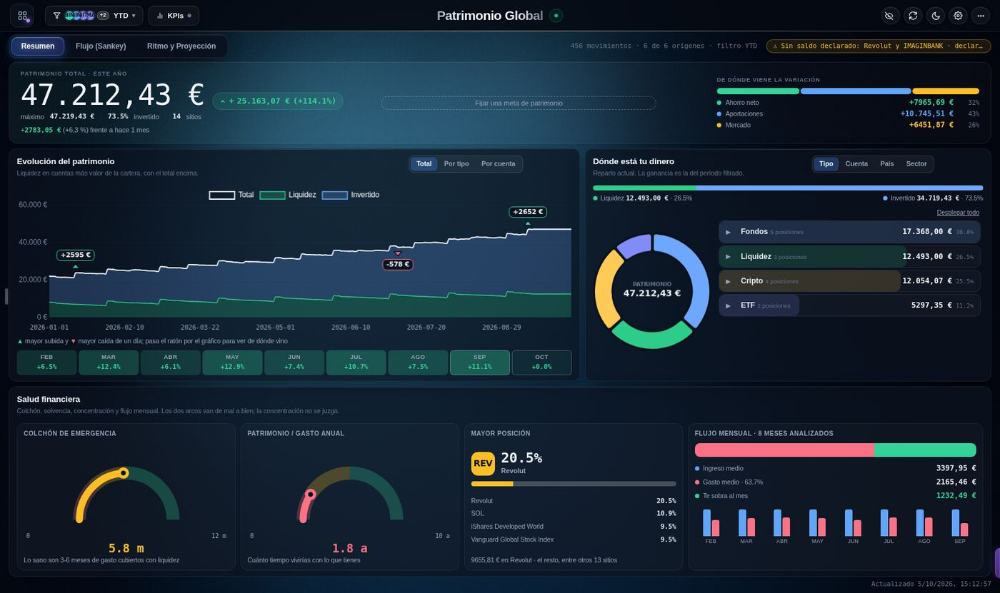
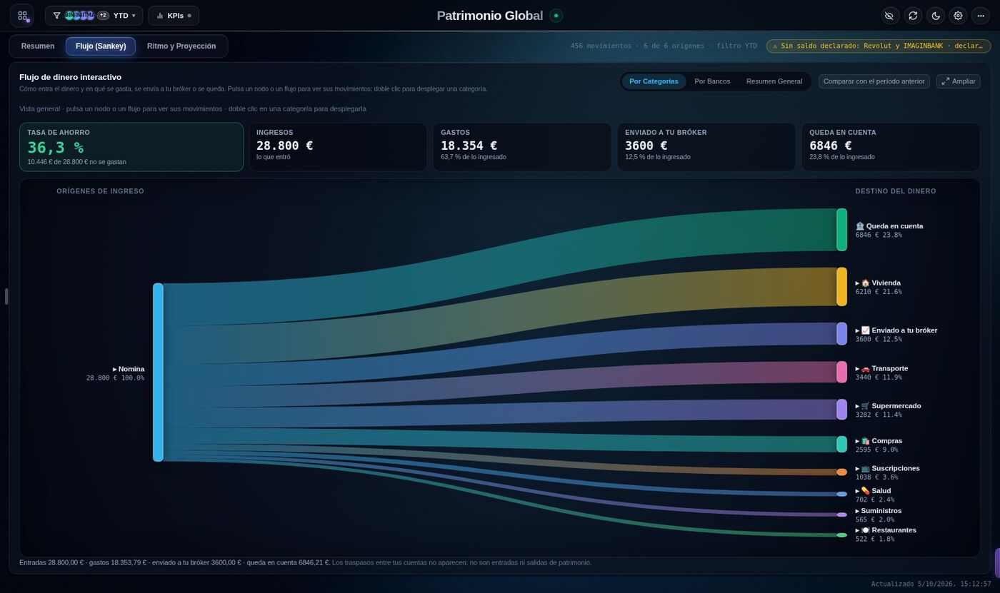
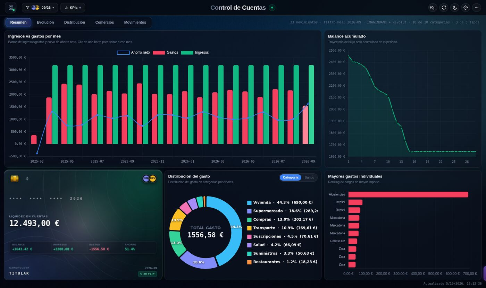
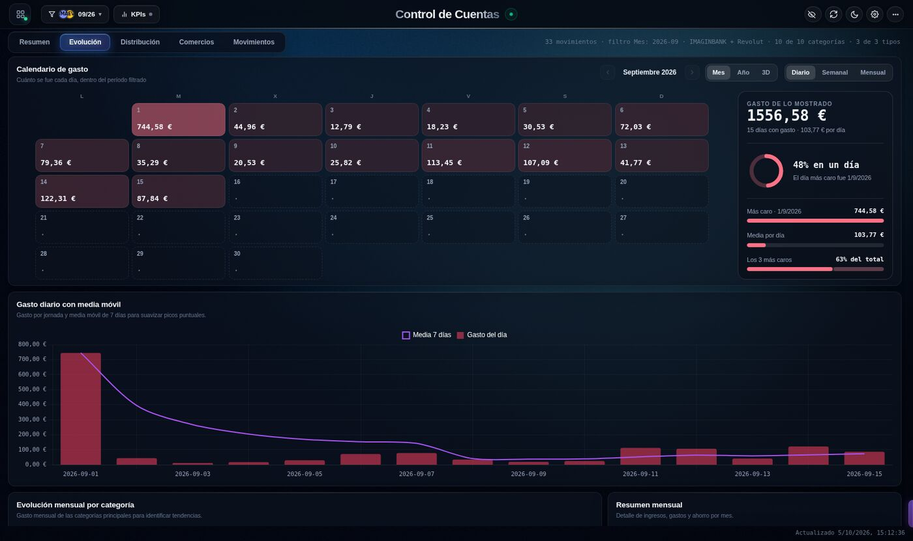
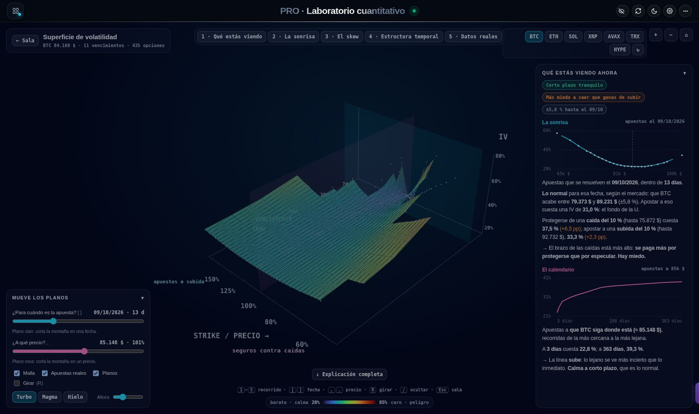
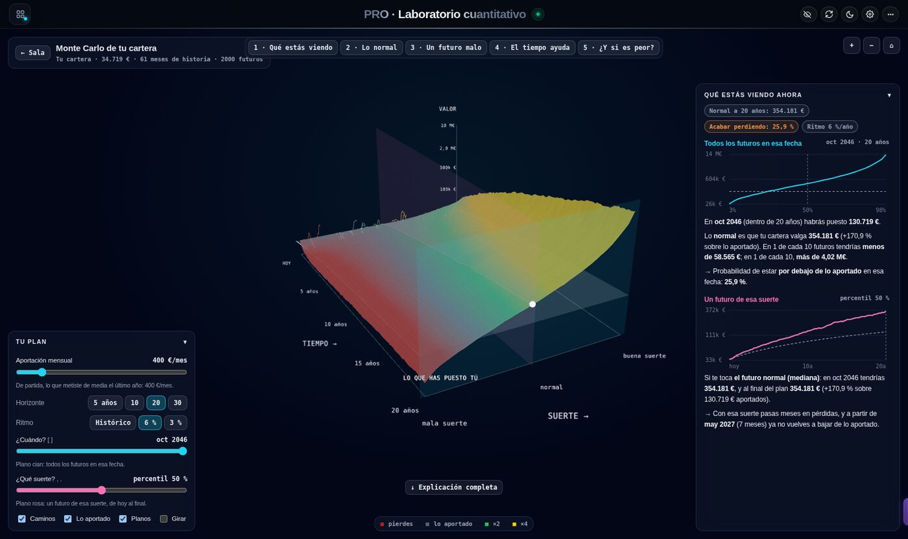
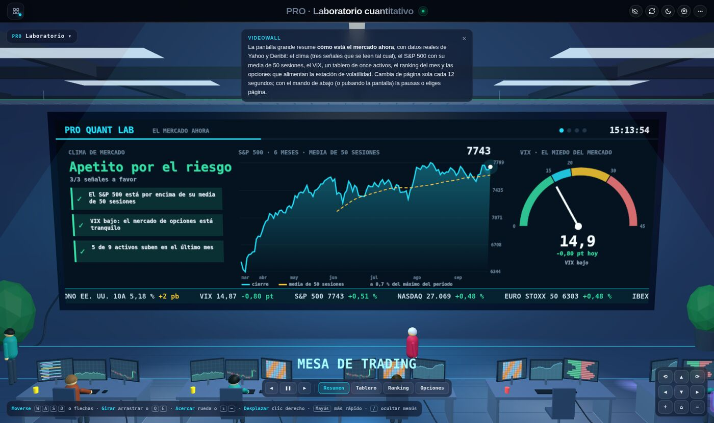

Personal Finance Dashboard
A full-stack personal finance platform that brings investments, bank accounts and net worth into a single interactive web app. It automatically ingests data from banks (PSD2 Open Banking), brokers, crypto exchanges and broker e-mails, prices every asset daily and turns it all into analytics: performance, risk, spending, cash-flow and a 3D quantitative lab. Built solo on Google Apps Script + Google Sheets, with a CI/CD pipeline and a headless-browser test suite.

Demo
Short walkthrough of the dashboard.
What It Does
Investment analytics
Daily portfolio valuation, time-weighted return vs. money-weighted "your money" return, IRR, Sharpe/Sortino, drawdown, VaR, benchmark vs. S&P 500 and a look-through of every fund by country, sector and company (Morningstar API).
Bank accounts & spending
Bank transactions imported via Enable Banking (PSD2) or any CSV/Excel statement, auto-classified into income, expenses and transfers with a confidence score and a review queue.
Net worth
Combines liquidity and investments day by day, splits each change into savings / contributions / market, and visualises money flows with an interactive Sankey diagram.
Rebalancing planner
Compares the real allocation with target bands and proposes concrete steps — redirect contributions first, tax-free fund transfers next, sales only if needed — with the tax impact.
3D quant lab (Three.js)
Live implied-volatility surfaces from Deribit, the US Treasury yield curve, market-regime clustering (PCA + k-means) and a block-bootstrap Monte Carlo of the user's own portfolio.
Voice assistant (LLM tools)
Ask "how did my BTC do in 2025?" and it navigates, filters the screen and answers with real figures, using typed function-calling with Gemini plus a fast classifier racing in parallel.
Architecture
Open Banking (PSD2), SnapTrade, Bitvavo, CoinStats, Gmail parsers, CSV/Excel importer
Google Sheets + Apps Script backend, hash-based dedupe, canonical event model, caching
Yahoo Finance, Morningstar, Deribit, US Treasury — daily snapshots
Single-page app with Chart.js, D3, Three.js and WebGL shaders
Credentials never reach the browser, and each user's data stays in their own Google Drive.
Screenshots
Shown with generated demo data. Click any image to enlarge.








Engineering Highlights
- Financial correctness first: every calculation (returns, transfers, cost basis, anchored balances) is validated by Node tests that run the real backend functions against representative data, with explicit invariants — e.g. the gain KPI must equal the sum of the per-asset bars
- Visual regression in CI: a local renderer reproduces Apps Script's templating, and Playwright/Chromium captures every view, audits the DOM for NaN values, overflow and WCAG contrast issues
- Robust ingestion: a format-agnostic statement importer detects columns, number and date formats by voting, uses the running balance as a consistency check and deduplicates against all other sources
- Automated deployment: GitHub Actions validates and pushes the code to Google Apps Script on every merge, with secrets kept out of the repository
- Polished UX: light/dark themes, mobile layout, privacy mode that blurs amounts, animated transitions and an interactive time slider shared across tabs
Technologies Used
Repository
The source code is kept in a private repository because it is connected to real financial accounts. A walkthrough is available on request.
Return to Projects